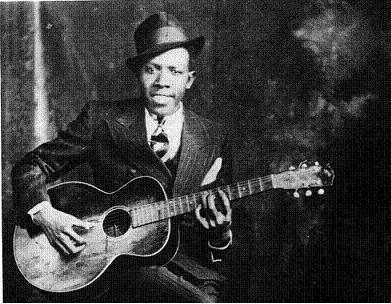

Истоки

Истоки блюза как музыки начались с далёких времён возникновения рабовладельчества на Американском континенте и завоза рабочей силы из Африки. Афроамериканцы работали в те времена на плантациях и, как обслуживающий персонал, выполняли всю самую грязную и непритязательную работу. Вся сложность жизненных отношений афроамериканца выливалась, в том числе, и в творчестве в таких этнических жанрах как холлер, рабочая песня и спиричуэлс, берущие, в свою очередь корни из этнической африканской музыки, преимущественно ударных битов и народно-религиозной вокальной составляющей. Большим толчком к возникновению жанра послужила отмена в 1863 году рабства в США. Всё это является истоками того, что мы сейчас называем блюзом. Несомненно, блюз нужно считать квинтэссенцией африканской народной культуры с прогрессом развития западной культуры и социализации в ней чёрного человека. Родиной блюза считается дельта реки Миссисипи.
Многие из тех, кто пел трудовые песни, жили в лагерях лесорубов или в палаточных городках строителей железных дорог, где в свободное время заняться было нечем. И естественно, что по вечерам люди пели. Я уже говорил, что многие негритянские песни могли исполняться в самых разных условиях; одни и те же песни звучали на хлопковых плантациях и в церквях, в военных лагерях и на судоверфях. В свободные часы негру в первую очередь вспоминались трудовые песни, и он их пел. И где-то каким-то образом из них родился блюз — новый, более совершенный вид музыки, призванный рассказать о чувствах и чаяниях трудящихся — мужчин или женщин. Трудно сказать, когда это произошло…
Большинство исполнителей блюза до старости продолжали работать на разного рода низкооплачиваемых работах (на плантациях, на речных дамбах), как и практически всё чёрное население США в первой половине XX века. Они бродяжничали по стране, перебиваясь случайными заработками, сохраняя при этом личную независимость, готовые в любой момент продолжить свои скитания. Иногда удавалось устроиться играть на вечеринках и в джук-джойнтах, где музыканту редко платили деньгами, а чаще — едой и выпивкой. Таков был характерный стиль жизни исполнителя блюза: тяжёлый физический труд и скудный заработок. Но гитара была рядом всегда, и можно было часто услышать блюз в любом месте: на углу улицы, в вагоне товарного поезда.
Сам же термин встречается лишь в марте 1912 года, когда был опубликован блюз «Dallas Blues», написанный Хартом Уэндом. Он стал первой в истории полностью блюзовой композицией, появившейся в печати. «Oh, You Beautiful Doll» — работа композиторов Тин-Пэн-Элли — была опубликована годом ранее, но только её первый куплет был в формате 12-тактового блюза. В том же 1912 году вышли ещё две песни, имевшие в своём названии слово «блюз»: «Baby Seals Blues» (август 1912; водевильный номер, написанный Артуром Силзом) и «The Memphis Blues» (сентябрь 1912; написан Уильямом Хэнди). Однако ни одна из них не была настоящим блюзом. Точная дата сочинения песни неизвестна, но есть свидетельства, указывающие на то, что «Dallas Blues» была написана не позднее 1909 года.
Традиционный блюз также называется архаическим и иногда захолустным (англ. Downhome) и исполняется без аккомпанемента. Является непосредственным наследником народного творчества афроамериканского населения. Этот стиль блюзов продолжает существовать в сельских местностях США и в настоящее время. Наиболее известными его исполнителями считаются Блайнд Лемон Джефферсон и Хадди «Ледбелли» Ледбеттер.
Классический блюз
«Единственное, что мы можем утверждать, — это то, что блюз как особый музыкальный жанр, видимо, сложился на основе некоторых форм негритянского трудового фольклора (и прежде всего уорк-сонга) в 80—90-х годах позапрошлого века и что процесс этот завершился к 1910 г. […] Можно предположить, что [кантри-блюз] относится к более ранней стадии эволюции этого жанра и является промежуточной формой между уорк-сонгом и классическим блюзом, окончательно сформировавшимся около 1920 г.»
Можно сказать, что формирование классического блюза завершилось где-то в 20-х годах XX века с появлением ансамблей, исполнявших блюзы. В нём утвердились характерные особенности, унаследованные от музыки афроамериканцев, и чётко определилась 12-тактовая форма и гармоническое сопровождение. В этот период блюз постепенно выходит из африканских гетто и переходит в форму шоу-бизнеса. Примечательно, что в этот период было повальное увлечение вокалистками, поющими блюз. В 1920 году Мэми Смит записала на грампластинку свой «Crazy Blues» и, ко всеобщему удивлению, пластинка имела небывалый коммерческий успех. Фирмы грамзаписи, почуяв прибыль, набросились на новую музыку. Именно к 1921 году формируется тенденция и начинается её реализация в последующие 12 лет. Начался блюзовый бум.
«Представители фирм грамзаписи рыскали по Югу, без разбору подписывая контракты с негритянскими певицами, многие из которых работали в водевильных группах и не имели к блюзу никакого отношения. К 1921 г. были записаны по меньшей мере пять-шесть негритянских певиц; в 1923 г. их уже были десятки. Всю страну охватило блюзовое безумие, и американцы в очередной раз открыли для себя негритянскую музыку… В погоне за модой фирмы грамзаписи приглашали в студию практически всех негритянок, которые хоть сколько-нибудь умели петь, и объявляли их исполнительницами блюзов».
В этот период, среди всего наплыва «модных» блюзовых исполнительниц принято выделять прежде всего Ма Рэйни (Ма Rainey), которая закончила выступать в 1935 году; Бэсси Смит (Bessie Smith), считавшаяся критиками вехой в эпохе блюза. Независимо от моды на исполнителей и музыку, публика всегда очень любила её, но её упадок произошёл к 30-м годам. В последний раз она записывалась в 1933 г., но, по свидетельству Д. Л. Коллиера, «это была уже скорее дань прошлому». Упадок женского классического блюза приходится на 30-е годы.
Большей популярностью пользовался Джимми Рашинг, который был ведущим вокалистом оркестра Каунта Бейси (Count Basie) с 1935 по 1948 гг. Легендарной фигурой традиционного блюза был и остаётся Роберт Джонсон (Robert Johnson), гитарист и певец, погибший в 27-летнем возрасте, но успевший в конце 1920-х — начале 1930-х годов записать около тридцати песен, и в их числе «Cross Road Blues», практически обязательный номер в программе блюзменов последующих поколений. В некоторых песнях: «Walkin' Blues» («Гуляющий Блюз»), «Cross Road Blues» («Блюз Перекрёстка»), «If I Had Possession Over Judgement Day» («Владей я чем-то во время Судного дня») — Джонсон звучит как настоящий рок-н-ролльный бэнд, так же полновесно, как первые группы Элвиса Пресли или Боба Дилана и мощнее их. «Однако взгляд на него как на первого рок-н-роллера только ещё начинает формироваться», — так характеризует Р. Джонсона американский музыковед Грей Маркус. Творчество Р. Джонсона сильно повлияло на формирование исполнительской манеры таких грандов рока, как Мик Джаггер и особенно Эрик Клэптон, использовавших темы блюзов Джонсона в своём репертуаре.
Среди других известных исполнителей этого времени можно назвать Чарли Паттона (Charley Patton), Джона Слипи Истиза (John Sleepy Estes), Биг Билла Брунзи (Big Bill Broonzy). Чаще всего блюзмены брали выразительные прозвища, как например, уже упоминавшиеся имена: «Слепой Лимон» Джефферсон, «Соня» Истиз, «Большой Билл» Брунзи и т. п.
Ритм-н-блюз

Ритм-н-блюз получил широкое распространение в военные времена. Можно отметить двух ведущих исполнителей этого периода Джо Тёрнера (Joe Turner) и Джимми Рашинга (Jimmy Rushing). Джо Тёрнер был знаменит своими быстрыми блюзами, которые он не столько пел, а как бы кричал на фоне энергичного фортепианного аккомпанемента в стиле «буги-вуги». По сути он является коммерческим блюзом, произошедшим во времена его урбанизации и впитавшим в себя нотки жизни города. Особенно важно то, что трансформировался не только характер, но и состав ансамблей. Электрификация и применение новой техники в середине 40-х гг. привело к активному внедрению в качестве музыкальных инструментов электрогитар, электроорганов, а несколько позднее и бас-гитар. Ударные инструменты и голос певца стали усиливаться с помощью микрофона. Тем самым оркестр из четырёх человек обрёл возможность играть громче и мощнее, чем традиционный биг-бэнд из восемнадцати исполнителей. Электрифицированные ансамбли нового направления, получившего название ритм-энд-блюз, начали вытеснять из дансингов, клубов и прочих мест развлечения большие джазовые и танцевальные оркестры, которые оказались экономически невыгодными и теряли поклонников. Кроме того, ритм-энд-блюз прекрасно прижился в маленьких забегаловках, кафе и барах. Термином «ритм-энд-блюз» музыкальные специалисты заменяют ранее применяемый в отношении развлекательной музыки «чёрных» термин «Race Music» (расовая музыка).
«К середине 40-х гг. такие исполнители как Чак Берри, Мадди Уотерс, Би Би Кинг и Бо Диддли, оказывавшие сильнейшее влияние на создателей современного рока, уводят блюзы ещё дальше от старого стиля. Они использовали джазовые ритмы, часто удвоенные по размеру с элементами стиля буги-вуги». В результате старая традиция практически была вытеснена с массовой сцены. Лишь горстка молодых людей старалась имитировать музыку в традиции кантри-блюза, которую в то время продолжал записывать на пластинки разве что только Джон Ли Хукер. «Но культурная среда, — пишет Д. Л. Коллиер, — породившая блюз, исчезла. Плантации, трудовые лагеря и бараки каторжан уходили в прошлое. Американский негр уже не чувствовал себя совершенно оторванным от основного течения американской культуры. Сосуд, в котором в течение многих поколений хранились африканские традиции, был разбит вдребезги»
Британский блюз

В 1960-х в Британии под влиянием американских блюзовых и рок-н-ролльных записей возникла череда местных исполнителей блюза, которые во время британского вторжения попали в американские чарты и получили мировую известность, в их числе The Rolling Stones, The Yardbirds (позже Эрик Клэптон, Cream, Led Zeppelin). Джими Хендрикс также начал свою карьеру в Британии. Музыка этих исполнителей повлияла на современную рок-музыку, в частности, музыку, на которую они оказали непосредственное влияние, называют блюз-рок.
Блюз в СССР
По словам Алексея Калачёва, в развитии российского (советского) блюза было 3 этапа. На первом этапе российские слушатели знакомились с блюзом через западный рок, то есть посредством «белых» групп, игравших блюз-рок (Led Zeppelin, Элвин Ли, Джонни Винтер и другие). Именно такая музыка стала называться блюзом. Лучшим советским блюзменом той поры был Алексей Белов, создавший в 1969 году группу Удачное приобретение. Музыка этой группы была наиболее близка к американскому блюзу. Таким образом появление блюза в СССР относится к концу 60-х — началу 70-х годов[10]. Блюзом также увлекался и лидер Песняров, Народный артист РСФСР и художественный руководитель В.Мулявин. В 1972 году коллективу из Минска было вручено Гран-при фестиваля в г. Сопот (ПНР)
Вторая волна относится к 80 годам, когда появилось больше как исполнителей, так и слушателей блюза, у которых было больше возможностей познакомиться с первоисточниками, был критический взгляд на предшественников. Можно отметить, что привлечению интереса к блюзу способствовал концерт Би Би Кинга в Москве в конце 80-х. Ярчайшими исполнителями этого периода были «Лига Блюза» и Сергей Воронов.
Третий этап связан с появлением «среды обитания» этого вида шоу-бизнеса — клубы. По мнению того же Калачёва, блюз и есть клубная музыка, не рассчитанная на стадионное потребление. Падение железного занавеса значительно расширило ассортимент блюзовых альбомов в свободной продаже.
Влияние
Под влиянием блюза возникло так называемое «блюзовое» направление в поэзии (Л. Хьюз, Дж. Керуак), литературе (Дж. Болдуин, С. Фицджеральд), театре (Ю. О'Нил, Т. Уильямс) и других видах искусства.
Подобно джазу, рок-н-роллу, хэви-металу, хип-хопу, регги, кантри и поп-музыке, блюз был обвинён в том, что он является «музыкой дьявола», и в подстрекательстве к насилию и прочему девиантному поведению. В начале XX века слушать блюз считалось постыдным, тем более что белая аудитория начала слушать блюз лишь в течение 1920-х годов.
Терминология
Блюзовые понятия
- Блюзовые ноты (англ. blue notes) — пониженные III, V и VII ступени в звукоряде натурального мажора.
- Блюзовое звучание (англ. blue sound) — характерная для жанра блюзовая гармония, где первые 4 такта зачастую играются на тонической гармонии, по 2 — на субдоминанте и тонике и по 2 — на доминанте и тонике.
- Блюзовое чувство (англ. blue feeling) — характерное эмоционально-психологическое состояние музыканта или слушателя, возникающее при исполнении или восприятии блюза.
- Блюзовый звукоряд (blue scale) — определённые составляющие ноты, выраженные в т. н. блюзовой мажорной или минорной гамме
- Блюзовый удар (англ. blue blowing) — способ игры на духовых инструментах, при котором высота тона непостоянна, лабильна, а тембр имеет специфически «блюзовую» окраску.
Разновидности
Различают следующие разновидности:
- по принадлежности к устной традиции или композиторскому творчеству — так называемые «первичные» и «вторичные» блюзы;
- по содержанию — драматический и лирический блюз;
- по манере исполнения — шаут-блюз (основанный на декламационной, «криковой» манере) и мелодический блюз (отличающийся большей напевностью, кантиленностью);
- по средствам исполнения — вокальный, вокально-инструментальный, инструментальный; комбо-блюз (исполняемый малыми ансамблями) и биг-бэнд-блюз (исполняемый большими джазовыми оркестрами);
- по степени аутентичности — аутентичный блюз и псевдо- или квазиблюз с их разновидностями (тин-пэн-элли-блюз, бродвейский блюз, свит-блюз; сюда относятся также произведения «в духе блюза», созданные некоторыми академическими композиторами, например, Равелем, Мийо, Гершвином, Коплендом, Онеггером, Мартину, Шульхоффом и др.); известным произведением Джорджа Гершвина в блюзовом стиле являются «Три прелюдии для фортепиано»;
- по историческим типам — архаический, или сельский блюз (приблизительно 1850—1890), классический, или городской блюз (приблизительно 1900—1935), современный, или постклассический блюз (другие его названия — эклектический блюз, софистикэйтед-блюз, модерн-блюз, блюз в стиле свинг (blues in swing; приблизительно с 1930). К числу жанровых и стилевых модификаций блюза в джазе относятся, в частности, джиг-пиано-блюз, баррел-хаус-блюз, буги-вуги; ритм-энд-блюз, фанки, соул, джаз-рок.
См. также
Примечания
- Дубинец, 2005, с. 616.
- Tony Bolden, Afro-Blue: Improvisations in African American Poetry and Culture, 2004, University of Illinois Press,ISBN 978-0-252-02874-8
- Kernfeld, Barry, ed. (2007). Blues progression // The New Grove Dictionary of Jazz;. 2nd Edition. Oxford, UK: Oxford University Press.
- Duncan, Blues Fiddling Classics, page 30: «This tune was the first 12-bar blues to be published (March 1912). It was written by violinist/band leader Hart Wand from Oklahoma»
- Davis, The History of the Blues, page 59: "But in a sense, the very first blues was the twelve-bar opening verse to the pop song "Oh, You Beautiful Doll, « which was published in 1911»
- Davis, The History of the Blues, page 59: "The composer of the very first copyright «blues» was Hart Wand, a white Oklahoma violinist and bandleader whose «Dallas Blues» was so named because its melody gave a black porter who worked for Wand's family «the blues to go back to Dallas.» This was followed a few months later by «Bably Seal Blues», a negligible item by the black vaudeville performer Arthur"Baby" Seals and ragtime pianist Arthur Matthews."
- Charters, The Country Blues, pages 34-35: "The first was Hart Wand's "Dallas Blues, " published in March; the second was Arthur Seals's "Bab Seals' Blues, " published in August; Handy finally brought out his blues in September. Both Handy and Arthur Seals were Negroes, but the music that they titled "blues is more or less derived from the standard popular musical styles of the «coon-song» and «cake-walk» type. It is ironic the first published piece in the Negro "blues idiom, «Dallas Blues,' was by a white man, Hart Wand»
- Charters, The Country Blues, page 35.
- John Covach, Andrew Flory. What's That Sound? An Introduction to Rock and Its History. — 2012. — ISBN 978-0393912043.
- Алексей Калачев. Приключения блюза
- «Блюз» // Рок-энциклопедия Кирилла и Мефодия (В. Озеров)
- Curiel, Jonathan.Muslim Roots of the Blues, SFGate. Архивировано 5 сентября 2005 года. Дата обращения 24 августа 2005.
- Garofalo, Reebee.Rockin' Out: Popular Music in the USA(неопр.). — Allyn & Bacon(англ.)рус., 1997. — С. 27. — ISBN 978-0-205-13703-9.
- Блюзовый лад // Музыкальный энциклопедический словарь. — М.: Советская энциклопедия, 1990. — С. 74. — 672 с.
Литература
- Блюз // Музыкальная энциклопедия. — М.: Советская энциклопедия, 1973. — Т. 1. — С. 495—496. — 1072 с.
- Блюз / Дубинец Е. А. // «Банкетная кампания» 1904 — Большой Иргиз. — М. : Большая российская энциклопедия, 2005. — С. 616. — (Большая российская энциклопедия : [в 35 т.] / гл. ред. Ю. С. Осипов ; 2004—2017, т. 3). — ISBN 5-85270-331-1.
- Jones, LeRoi.Blues people: Negro music in white America. — N. Y. : William Morrow and Company, 1963. — 244 p. — ISBN 0-688-18474-X.
- Jones, LeRoi. Blues people: Negro music in white America. — Harper Collins, 1999.
- Murray, Albert. Stomping the blues. Vol. 362. Da Capo Pr, 1976.
- Seligman, Martin EP. Boomer blues. // Psychology Today 22.10 (1988): 50-55.
Ссылки
- Короткометражный фильм о героях блюза
- Блюз Радио и Новости Блюза BluesMen Channel